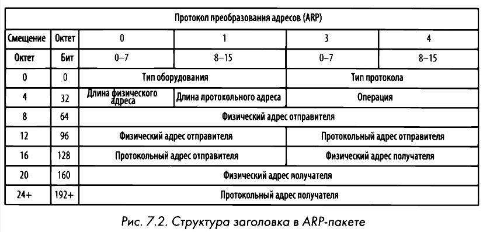
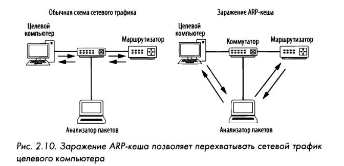

ARP
Address Resolution Protocol или Протокол разрешения адресов — механизм, который сопоставляет адреса IPv4-адреса с MAC-адресами для взаимодействий протоколов 2 и 3 уровня модели OSI. Протокол определен в стандарте RFC 826.
В Linux с помощью команды arp -a можно получить список элементов внутри таблицы ARP, сохраненной локально на хосте.
Команда arp-scan [ip-адрес/маска] выведет список всех хостов в одной сети.
В процессе преобразования адресов по протоколу ARP применяются только два типа пакетов: АRР-запрос и АRР-ответ. АRР-запрос посылается в широковещательном режиме. Если по сети передается самообращенный АRР-пакет, то он вынуждает любое принимающее его устройство обновить кеш-память. Этот пакет похож на ARP-запрос с той разницей, что отправитель и получатель один и тот же хост. Многие сетевые устройства сохраняют в памяти МАС адреса устройств, с которыми обменивались данными, то есть создается таблица ассоциативной памяти, которая динамически обновляется.

Заражение ARP
Отравление ARP происходит, когда злоумышленник отправляет поддельные ARP-сообщения с целью связать свой MAC-адрес с IP-адресом целевого устройства. Это может привести к атакам типа "Человек посередине" (MITM), при которых злоумышленник может перехватывать, изменять или блокировать трафик, предназначенный для целевого устройства. Для предотвращения атак с отравлением ARP организации могут внедрять меры безопасности: статические записи ARP, динамическая проверка ARP и обеспечение обновления сетевых устройств.
